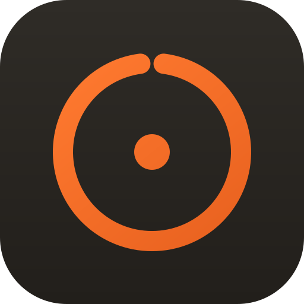
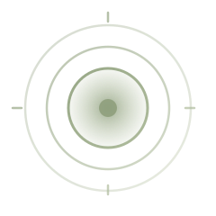
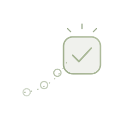
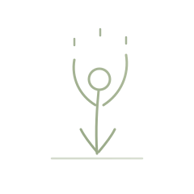
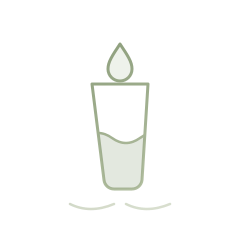
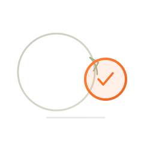

FOKUSMost focus apps just block. FOKUS blocks distracting apps during your sessions — and the moment you're tempted to leave, it meets you right there and gently walks you back.
Android first · 100% offline · No account, no ads, no tracking
That reach — the automatic tap toward Instagram mid-task — is where focus is actually won or lost. FOKUS is built for that exact three seconds.
You tap Instagram. Instead of the feed, a quiet screen: your task, your time remaining — no red, no shame.
One tap opens Recovery: breathe for 30 seconds, name the next smallest step, stretch, take water — or shrink the session and finish small.
Most sessions resume here. And if you truly need to leave, the exit is always one honest tap away — no lecture, no trap.
Five guided ways back — breathe, task reset, stretch, water, shrink — offered in the exact moment of temptation. This is the part nobody else has.
The core ideaLeaving is always allowed and always dignified. Five honest reasons, and an emergency door that opens instantly — no guilt, no streak penalty.
Friction, honestlyStreaks earn tokens you can spend to bend a session without breaking the streak. Discipline that rewards you with slack — never one that punishes a slip.
Kind by designEverything runs on your device. No account, no cloud, no analytics SDK — the app has zero network access. Your struggle stays on your phone.
Private by default
Breathe30s, 4-4-4
Task resetNext small step
Stretch45s, stand up
Water45s reset
ShrinkFinish smallPick apps to block, a duration, and one small task anchor. One-tap repeat re-runs your last setup instantly.
Reach for a blocked app and FOKUS intercepts in under a fifth of a second — then offers Recovery instead of a dead end.
Completed sessions build your streak and earn lock-break tokens. Progress you can feel — celebrated, never gamed with guilt.
FOKUS is in closed testing on Android. Leave your email and we'll invite you when the next round opens. No spam — just the invite.
We store your email only to send the invite. It never leaves our inbox — matching how the app itself works.